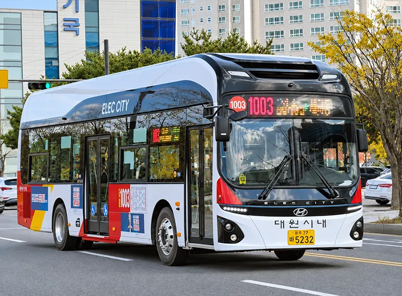
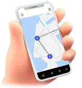

전남-광주 하나의 생활권으로
교통도 하나로 통합됩니다
광주와 전남을 하나의 교통생활권으로 잇는 ‘통합교통체계 구축 계획’이 나왔습니다. 인구 약 326만 명, 면적 1만 2,864㎢의 전남광주통합특별시를 하나로!
전남-광주의 교통망과 서비스를 하나로 연결하고 지역별 교통 여건에 맞춰 대중교통 접근성과 이동 편의를 높이는 ‘통합교통체계 구축 계획’을 알기 쉽게 설명해 드릴게요.
10·30·60
전남광주가 하나의 생활권이 되는 숫자
- 10분대중교통까지 10분 이내 접근
- 30분권역 거점까지 30분 이내 연결
- 60분광역 이동 60분 이내
올타버스를 아세요?
‘올타(ALL-TA)’는 ‘모두가 타다’라는 뜻의 전남광주 대표 교통 브랜드예요. 철도역·터미널·통합청사를 모두 잇는 광역급행버스랍니다.
9월에 서부권, 동부권 3개 노선으로 시작해 현재는 광주권 3개 노선까지 6개 노선 35대가 운행 중인데요. 앞으로 올타버스가 24개 노선으로 확대될 예정이에요.

- 현재 운행
- 6개 노선 35대
- 확대 예정
- 24개 노선
| 권역 | 노선 | 중심역 | 연결지역 |
|---|---|---|---|
| 서부권 | 8개 | 목포역 | 무안, 영암, 해남 등 |
| 동부권 | 5개 | 순천역 | 여수, 광양 등 |
| 광주권 | 7개 | 광주송정역 | 나주, 화순, 담양, 장성 등 |
| 권역 간 | 4개 | – | – |
앱

하나만 있으면 OK하나의 앱에서 목적지까지 이동 경로와 교통수단을 검색하고 예약, 결제부터 환승 정보까지 한 번에 이용할 수 있는 ‘올타통합교통플랫폼’을 구축합니다. 또 남도패스를 확대하고 통합환승요금제도 추진해요.
-
올타통합교통플랫폼
하반기부터 단계적 추진한 앱에서 경로 검색, 예약·결제, 환승 정보까지. 먼저 버스·수요응답형 교통(DRT)·공공형택시를 연계하고, 이후 도시철도·일반철도·여객선·항공으로 확대.
-
남도패스
도입 목표광주·전남의 대중교통비 지원 제도를 통합. 청년 지원 연령 34세 → 39세로 확대, 어르신·저소득층 지원 강화.
-
통합환승요금제
단계적 도입지역마다 다른 환승 시간·할인 기준을 정비하고 권역 간 이동에도 환승 혜택.
전남광주 시민들에게는
이런 변화가 예상되고 있어요
-
청년
교통비 지원 연령이 39세까지 확대되어 남도패스 혜택을 폭넓게 받을 수 있어요.
-
광주-전남 이동 시민
올타버스와 통합환승요금제를 이용해 시간과 교통비를 절약할 수 있어요.
-
농어촌 주민
수요응답형 교통(DRT), 공공형택시, 100원택시, 마을버스를 확대하고, 무상버스·공공형택시 운행 지역이 늘어나 이동이 편리해져요.
-
섬·연안 주민
여객선과 육상 교통 연계를 강화하고, 교통약자 이동 지원도 확대됩니다.
-
어르신·저소득층
강화된 남도패스로 폭넓게 지원받아요.
철도와 도로도
큰 그림을 그리고 있습니다
철도
- 도시철도
- 2호선 안전 개통 준비, 3호선(광천상무선)은 행정 절차 단계적 추진
- 광역철도
- 나주~광주, 화순~광주
- 일반철도
- 서해안선(군산~목포), 대구~광주 달빛철도, 신산업선
- 고속철도
- 호남고속철도 2단계 개통, 전라선 고속화, 광양 방면 우주철도
- 중장기
- 광역급행철도(NTX) 2개 축, 통합특별시 순환철도망
도로
- 고속도로 9개 노선, 372.2km 확충(서부권 4개, 광주권 3개, 동부권 2개)
- 담양~전주를 거쳐 세종·수도권까지 잇는 호남 메가시티 고속도로망도 추진
그래서 언제 만날 수 있는 걸까?
- 자율주행
대중교통 - AI 기반
교통 운영 체계 - 해상 수요응답형
교통(DRT) - 도서형 UAM
(도심항공교통)
통합교통체계는 까지 3단계로 추진할 예정인데요. 자율주행 대중교통을 확대하고, AI 기반 교통 운영 체계를 구축하고, 해상 수요응답형 교통(DRT)과 도서형 UAM(도심항공교통) 같은 새로운 교통수단을 도입하는 미래 교통도 든든하게 준비합니다.